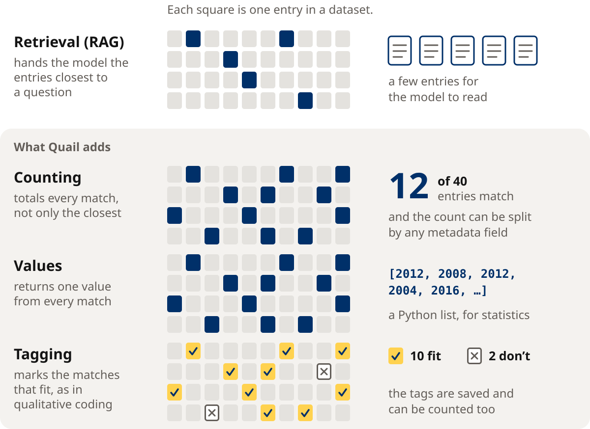
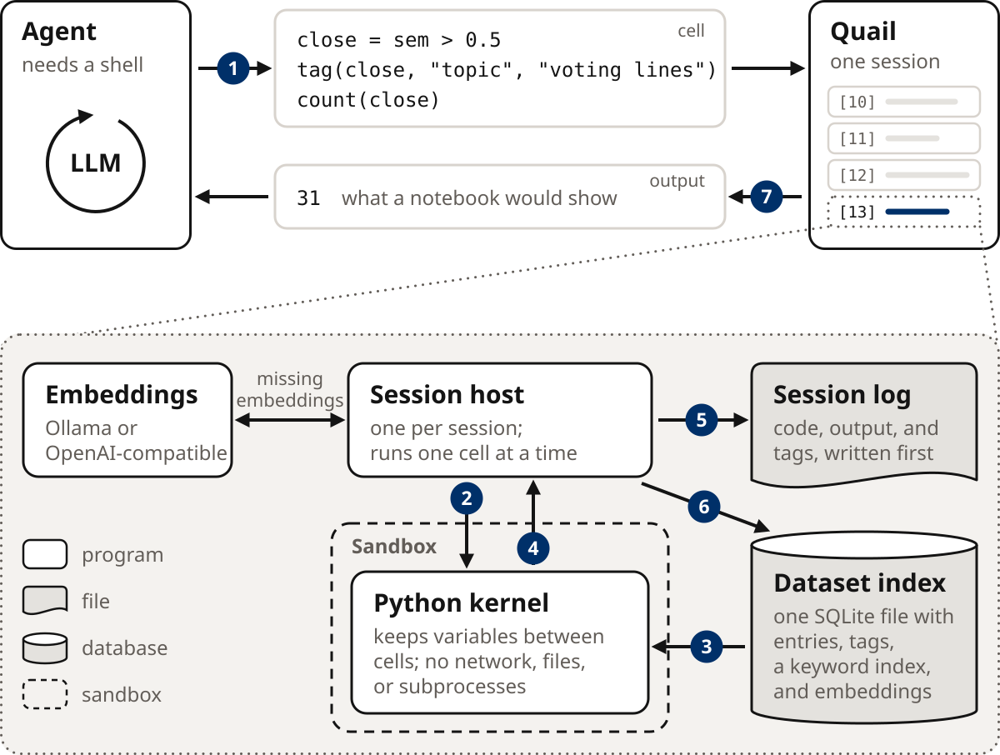
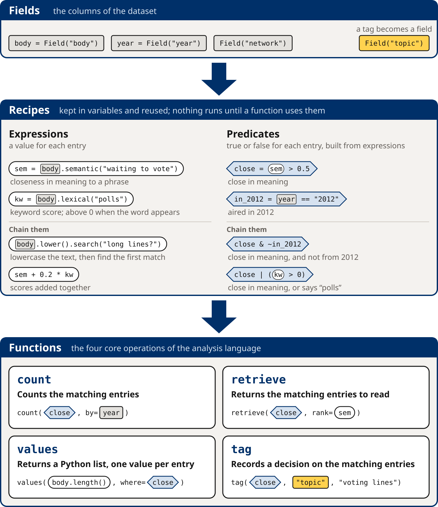
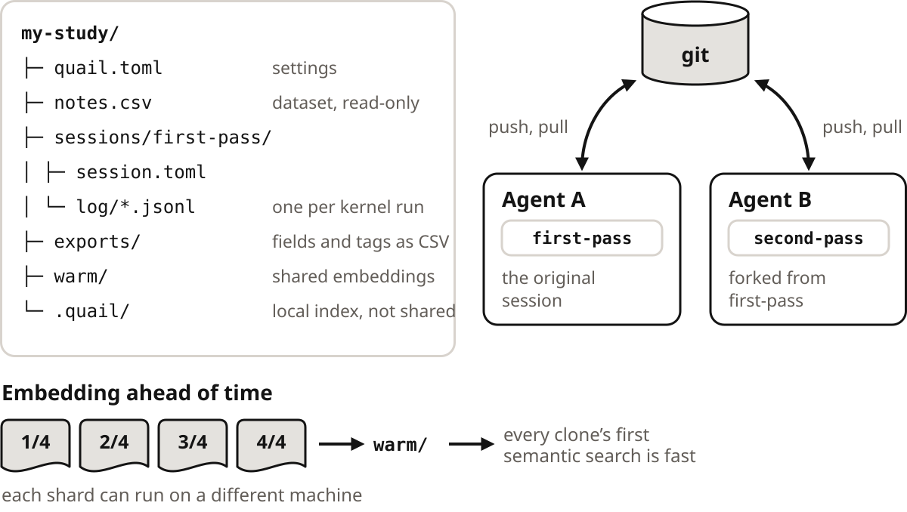
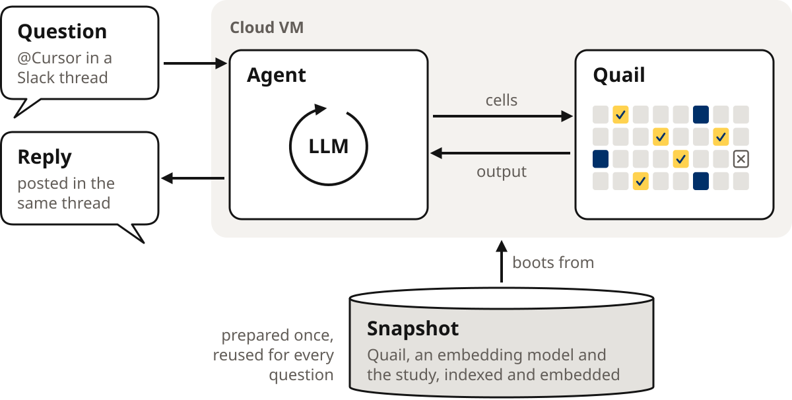

labels = [
…
("is_celebrity", r"(?i)\bObama is a celebrity\b"),
("is_not_ready", r"(?i)\bObama is not ready\b"),
…
]
…
for name, pat in labels:
hit = body.search(pat) != None
print(name, count(hit),
count(where=hit, by=Field("network")).most_common(8))Beyond retrieval
Quail lets an AI agent make sense of a large text dataset in a notebook, with tools it can combine in code.
Researchers often have more text than anyone can read closely.1 Retrieval-augmented generation (RAG)2 helps an agent with a large dataset by handing it the few entries that best match a question. This can answer “what did the news say about lines at the polls?” but not “how often, and on which networks?”

Quail builds on RAG. It keeps retrieval and adds three more functions: count and values work over every matching entry, not just the closest few, so the agent can check how common something is instead of guessing from examples, and tag saves its analysis on the entries themselves.
A notebook for an agent
A Jupyter notebook lets a researcher try something, read the result and decide what to try next. Quail gives an agent the same loop. Each cell the agent sends runs in a kernel that stays alive between cells, and the agent gets back what a notebook would show: printed output, then the last line’s value or a traceback.
Many systems give an agent a separate tool for each operation, such as search or count. Quail gives it a Python kernel instead, where searching, counting and tagging are functions in Quail’s analysis language, so one cell can combine them and return only what matters. Cloudflare’s Code Mode makes the same choice for MCP tools but starts a fresh sandbox for each snippet;3 Quail keeps its kernel from one cell to the next.

The session host saves each cell to the session log (5) before replying (7), so every result is already on disk. The index is only a cache of the study’s files.
The analysis language
Cells combine ordinary Python with Quail’s analysis language. Its pieces build on one another, from the columns of a dataset to four core functions.

Studies live in git
A study is an ordinary folder of text files, so git can share it the way it shares code. Each kernel run writes its own log file, so agents working in parallel push separate files that merge without conflicts. To branch an analysis without disturbing the original, an agent can copy a closed session’s tags and history into a new session.

Semantic search needs embeddings of every distinct value in a field, which can take hours to compute. quail warm can compute them ahead of time, in shards on several machines, and save them in warm/, so every clone starts with them.
Where Quail can run
Quail needs only a shell, so it runs wherever an agent does, on a laptop or a cloud VM. For example, in one tested setup, mentioning @Cursor in a Slack thread started a Cursor cloud agent on its own VM. The VM booted from a snapshot that already held Quail, an embedding model and the dataset, indexed and embedded, so the agent could start without any setup.

Dashiell Coyier
@Cursor how is Obama characterized?
Before responding, the agent ran nearly 20 cells on TV news transcripts from six election years. Part of one cell, executed on a dataset of 2008 news transcripts:
Cursor
The portrait moves from rising uniter (2004), to a fight over whether he is a historic, gifted candidate or an unready celebrity with a suspect identity (2008) … and by 2024 to a celebrated speaker and campaign headliner.
… “Obama is not ready” 185 (CNN 70, Fox 41, MSNBC 37), often Biden’s primary quote reused by McCain.
Status and next steps
Quail 0.94 is an alpha release for Linux and macOS, open source under the Apache-2.0 license. It works with any agent that can run shell commands.
Open questions
- How does Quail add value to coding agents such as Codex or Claude Code?
- Is semantic search really helpful?
- Could Quail search and tag passages within a text without chunking it first?
- How could “System 1” decision models such as Jev be integrated into Quail?
- How can an agent communicate its method efficiently, so that researchers can trust its analysis?
To try it, with git and uv installed:
$ git clone --depth 1 https://github.com/dcoyier/Quail.git
$ cd Quail && uv sync --locked --no-dev --python 3.12
$ . .venv/bin/activate && quail init ../my-study
Let us know your thoughts if you try Quail!